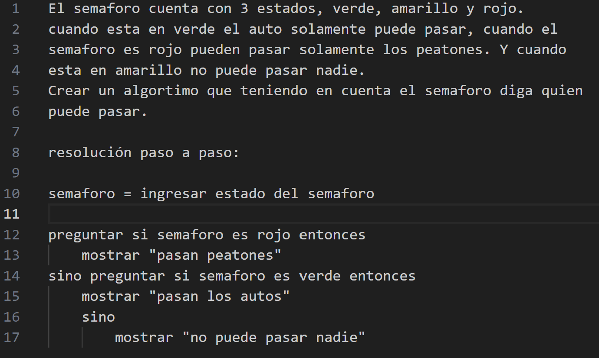

Concepto de algoritmo
Un algoritmo es una serie de pasos uno tras otro que se utilizan para obtener o hacer algo. Por ejemplo cuando hacemos una torta tenemos que seguir unos pasos que estan en el carton en orden, ya que no es lo mismo que empiece calentando, luego agregue los huevos, despues la leche, deje enfriar, etc. Que si yo sigo los pasos.
Para .
1- Crear el paso a paso para resolver el siguiente problema:
En un edificio, hay un sistema de control de acceso a una zona restringida. El sistema permite la entrada basada en la hora del día y el tipo de acceso (empleado o visitante).
Reglas:
Horario de acceso:
Empleados: Pueden acceder de 08:00 a 18:00.
Visitantes: Pueden acceder de 10:00 a 16:00.
Días de la semana:
Empleados: Pueden acceder de lunes a viernes.
Visitantes: Pueden acceder solo de lunes a jueves.
Pregunta:
Dado el tipo de acceso (empleado o visitante), la hora (en formato 24 horas) y el día de la semana, determinar si la entrada está permitida.